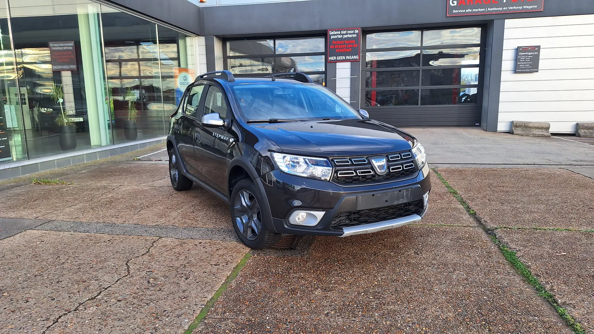

Dacia Sandero Stepway
0.9 TCe · 90 pk · 2018
102.511 kmBenzineHandgeschakeld
€ 7.999
Altijd onderhouden bij Garage Peter. Ideaal als eerste wagen of tweede gezinswagen.
Bekijk deze wagen →Ontdek onze zorgvuldig geselecteerde tweedehandswagens bij Garage Peter in Bredene. Persoonlijke service, duidelijke informatie en bezichtiging op afspraak.

102.511 kmBenzineHandgeschakeld
Altijd onderhouden bij Garage Peter. Ideaal als eerste wagen of tweede gezinswagen.
Bekijk deze wagen →Geen wagens gevonden met deze filters.
Volg Garage Peter op FacebookOntdek als eerste onze nieuwste tweedehandswagens!